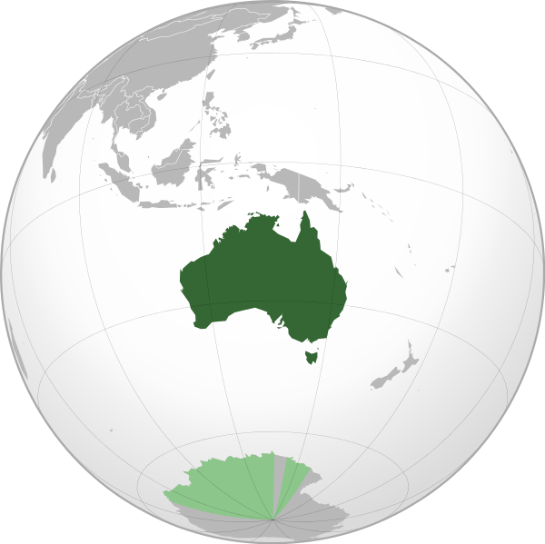
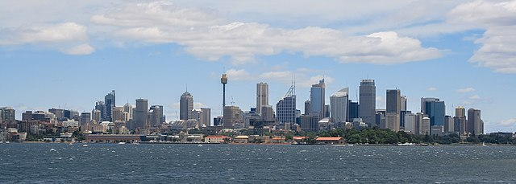

L'Australie, en forme longue leCommonwealth d'Australie , est un pays de l'hémisphère sud dont la superficie couvre la plus grande partie de l'Océanie. En plus de l'île éponyme, l'Australie comprend également la Tasmanie ainsi que d’autres îles des océans Austral, Pacifique et Indien. Les nations voisines comprennent notamment l'Indonésie, le Timor oriental et la Papouasie-Nouvelle-Guinée au nord, les îles Salomon, Vanuatu et le territoire français de Nouvelle-Calédonie au nord-est, la Nouvelle-Zélande au sud-est ainsi que le territoire français des îles Kerguelen à l'ouest des îles australiennes Heard et McDonald. Peuplée depuis plus de 50 000 ans par les Aborigènes, l'île-continent d'Australie est visitée de manière sporadique, notamment par des pêcheurs venus du nord, puis par des marins néerlandais. À partir du XVIIe siècle, explorateurs et marchands européens reconnaîtront les côtes, mais ce n’est qu’en que la moitié orientale de l'île est officiellement revendiquée par la Grande-Bretagne et le — jour de la fête nationale australienne — qu'est fondée la colonie pénitentiaire de Nouvelle-Galles du Sud. Cinq autres colonies largement autonomes sont fondées dans le courant du XIXe siècle, à mesure que la population augmente et que de nouveaux territoires sont explorés. Le 1er janvier , les six colonies se fédèrent et forment le Commonwealthd'Australie. Depuis son indépendance, l'Australie conserve un système politique stable de type démocratie libérale et reste une monarchie parlementaire membre du Commonwealth des Nations . La langue nationale est l'anglais et la monnaie le dollar australien. Sa capitale est Canberra, située dans le Territoire de la capitale australienne. Sa population, estimée à 25,2 millions d'habitants en décembre , est principalement concentrée dans les grandes villes côtières de Sydney, Melbourne, Brisbane, Perth et Adélaïde . De surcroît, avec un PIB nominal de 1 379 milliards de dollars américains, 'État se place comme treizième puissance économique mondiale en 2017. Depuis l'an 2000, l'Australie est classée par le PNUD deuxième pays le plus développé au monde après la Norvège. Le pays est le septième émetteur de gaz à effet de serre par habitant en . L'émeu est l'oiseau national de l'Australie et le kangourou est l'animal national. Le pays compte plus de 500 parcs nationaux, record dans le monde.
| Administration | Forme de l'État | Roi | Langues officielles |
| Monarchie constitutionnelle parlementaire fédérale | Élisabeth II | Anglais | |
| Géographie | Capitale | Superficie totale | localisation |
| Canberra | 7 692 060a km2 | maps | |
| Démographie | Gentilé | Population totale | Densité |
| Australien, Australienne | 25 180 200 hab | 3 hab./km2 | |
| Économie | PIB nominal par hab | l'IDH | Monnaie |
| 61 219 $ | 0,9393 | Dollar australien |
Le développement économique de l’Australie a été lent au départ et basé sur l’exportation de la laine. Cela a changé avec la découverte d’or en et le secteur minier est devenu le plus important secteur de l’économie australienne. Au début du XXIe siècle, le secteur tertiaire de l'économie, dont le tourisme, l'éducation et les services financiers, constitue 69 % duPIB , l'agriculture et les ressources naturelles constituent respectivement 3 % et 5 % du PIB, mais elles contribuent largement aux performances à l'exportation du pays, avec une tendance à l'épuisement pour certaines d'entre elles . Les principaux clients de l'Australie sont le Japon, la Chine, les États-Unis, la Corée du Sud et la Nouvelle-Zélande L’Australie a une économie prospère et diversifiée. Ces dernières années, l’économie australienne a fait face au ralentissement économique mondial en gardant une croissance stable. La croissance de la production a continué grâce à la bonne consommation nationale et la confiance des entreprises et des consommateurs dans leur économie reste solide. L’importance accordée aux réformes est un autre facteur clé de la force de l’économie. Dans les années , le Parti travailliste, dirigé par le Premier ministre Bob Hawke et le ministre des finances Paul Keating, a joué un rôle crucial dans la modernisation de l’économie australienne en laissant flotter le dollar australien et en dérégulant partiellement le système financier. À partir de , la coalition gouvernementale, dirigée par le Premier ministre John Howard, continua d’implémenter des micro-réformes économiques. Certains disent que la dérégulation du marché du travail durant cette période fut le résultat d’une nécessaire flexibilité du marché du travail. D’autres critiquèrent ces dérégulations pour leur impact négatif sur les salaires, la sécurité et la santé. La législation introduite durant cette période cherchait à réduire la participation et le pouvoir des syndicats en préférant favoriser la négociation à l’intérieur des entreprises. De plus, durant cette période, la coalition gouvernementale a dérégulé de nombreuses autres industries, entre autres le secteur des télécommunications, et a privatisé nombre de sociétés nationales . La fiscalité a été réformée en avec l'introduction d'une TVA de 10 % qui a permis de réduire quelque peu les impôts sur les sociétés et l'impôt sur le revenu. Mais aux élections fédérales de, ce gouvernement a été mis en minorité et son Premier ministre a été personnellement battu. Le PIBde ce pays est de 1 561 milliards USD en 2013. L'Australie est un pays prospère, à l'économie de type occidental, son PIB par hab est de 67 468,07 USD en . Le pays a été classé en au sixième rang mondial pour l'indice de qualité de vie par The Economist et, en , au deuxième rang à l'IDH du Programme des Nations unies pour le développement. L'absence d'une industrie de transformation orientée vers l'exportation a été considérée comme un élément clé de la faiblesse de l'économie australienne mais la hausse récente des prix des produits exportés par l'Australie et l'augmentation du tourisme rendent cette critique moins pertinente. Néanmoins, l'Australie reste avec le quatrième plus grand déficit au monde de la balance des transactions courantes . Ce problème est considéré comme peu important par certains économistes car il a coïncidé avec une période de forts échanges commerciaux et de faibles taux d'intérêt ce qui rend le coût de la dette relativement faible Les écarts de richesses s'accentuent. Entre et , la richesse moyenne des 20 % des ménages les plus riches a augmenté de 53 %, tandis que pour les 20 % des ménages les moins riches la chute a été de 9 %. En , le 1% des salariés australiens les plus riches gagne autant en quinze jours que les 5 % des plus pauvres en un an.Le taux d'endettement des ménages, situé à 216 % en , est l'un des plus élevés au monde. Economie Australie 